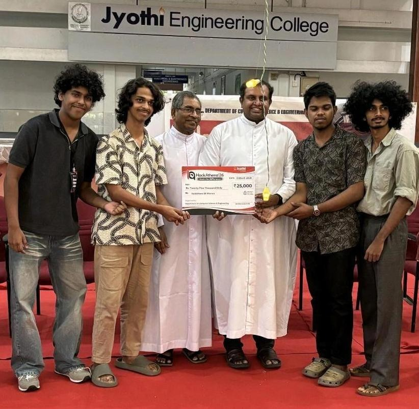
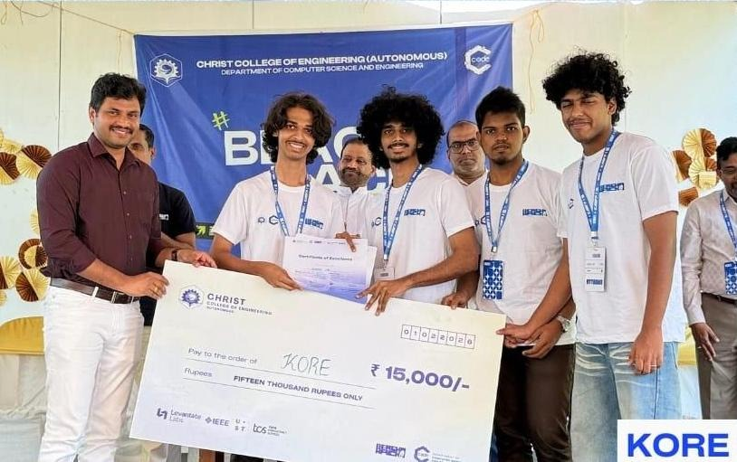
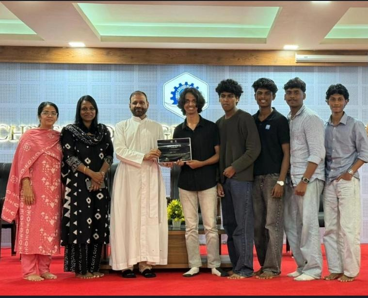
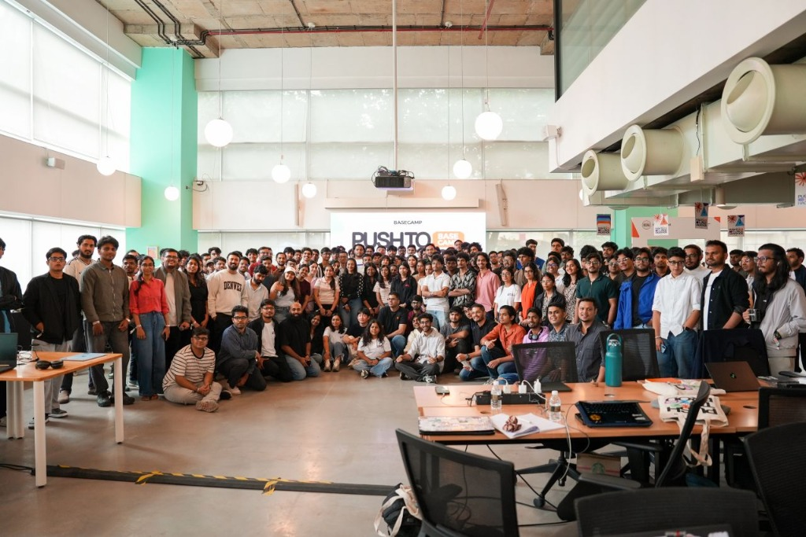

Hello, I'm Athul VR
MLOps & Geospatial Systems
Approaching Machine Learning as a systems engineering discipline. I prioritize operational readiness, observability, and infrastructure over model-only thinking.
Engineering Focus
Applying a "Build, Deploy, Monitor, Improve" methodology to construct functional, defensible systems under competitive constraints.
Production Readiness
Prioritizing system robustness and operational reliability over pure model thinking. I ensure models translate effectively into production-ready microservices.
Real-time Observability
Engineering deep telemetry integrations with Prometheus and Grafana. I build automated feedback loops to track model drift, resource constraints, and data quality.
Geospatial Analytics
Fusing ML pipelines with spatial databases. Experienced in modeling complex network routing graphs and GIS calculations using GeoPandas, Rasterio, and NetworkX.
Featured Projects
Deploying ML models and telemetry analytics as high-performance, structured systems.
CascadeNet v2.0
A 3-layer AI flood actionability engine mapping 100-scenario propagation loops across infrastructure graphs. Features an auto-routing system sending plans to 5 agency stakeholders in <20 seconds, resolving coordination failures. Tested on Kerala 2018 flood data.
github.com/Athullvr/CascadeNet ↗TelemetryIQ
Two-stage ML anomaly pipeline using Isolation Forest for incident detection and Random Forest for classification (Leaks, Spikes, Bad Deploys). Features native Prometheus/Grafana diagnostics and FinOps economic scaling evaluations.
github.com/Athullvr/TEAM-KORE-HFC ↗Metro Connect
A mobile-first multimodal transit copilot unifying the 25-station Kochi Metro Blue Line, 6 Water Metro ferry routes, and feeder bus grids into an offline-first journey planner. Features a dual-mode reasoning layer with a local simulated routing engine and serverless LLM disruption adapters.
github.com/Athullvr/Metro-Connect ↗Hackathon Record
Validating technical execution, design velocity, and teamwork under strict clock constraints.

Hackathena 2026
Won first place overall for developing CascadeNet, a multi-stakeholder ML flood-response coordination simulator routing automated disaster response plans.

BeachHack H4C
Developed a specialized DevOps telemetry intelligence pipeline using Docker, Scikit-learn, and Git workflows for automated incident detection.

Webathon
Designed and deployed a highly responsive frontend web system under tight constraints, winning top marks for performance and accessibility.

Push to Prod: Frontier
Selected as one of only 150 participants for a high-intensity 5-hour frontier build sprint. Engineered backend architectures for AI model security to detect intrinsic vulnerabilities prior to deployment.
Skills & Tooling
Languages, frameworks, and tools used to construct and observe machine learning operations.
AI & Machine Learning
Geospatial & GIS
Backend & Infra
Experience
IPR Lead
2025 – 2026 (2 mos)- Led intellectual property awareness and innovation initiatives on campus.
- Coordinated student projects aligned with startup pipelines and research pathways.
- Supported validation of ideas, documentation workflows, and accelerated prototype phases.
Education
B.Tech Computer Science
2025 – 2029First-year undergraduate student. Dedicated focus on AI-assisted development paradigms, core machine learning mathematics, and infrastructure scaling.
- Coursework Focus: AI-Assisted Development, Systems Engineering.
- Ongoing studies: NPTEL Machine Learning certification.
Volunteering
IEDC CCE
Supported end-to-end technical operations for "Belfort of Wall Street", a 30-hour flagship startup simulation at CCE's Techletics. Managed user progression boards, scoring systems, and real-time coordination under high-pressure conditions.
IEDC Thrissur
Coordinated pitch presentations, judging line-ups, and participant communications in the Health Domain track at the Thrissur District IEDC Summit, maintaining clean logistical flows.
Let's Connect
Ready to talk system metrics, geospatial modeling, or ML pipelines?
Thrissur, Kerala · Active on GitHub and LinkedIn